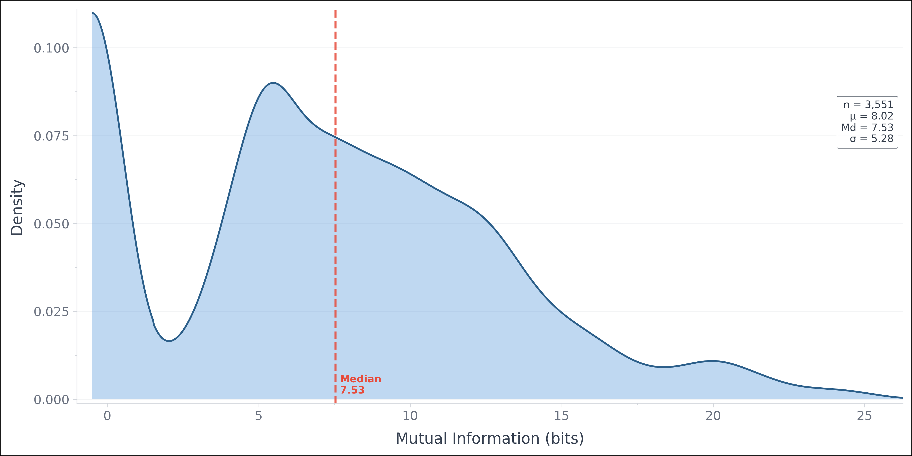

Mutual Information Filtering¶
Mutual Information Filtering (i.e. shannon algorithm) leverages approximations of pointwise mutual information to obfuscate text.
Pointwise Mutual Information (PMI)¶
Pointwise Mutual Information (PMI) is an information-theoretic metric used to measure the strength of association between specific features or outcomes. Within language processing pipelines, it can quantify how much information a surrounding context $Y$ provides about a specific target token $x$.
The reduction in uncertainty (or change in surprisal) of a token given its context can be expressed with the formula:
I(x; Y) = S(x) - S(x|Y)
Where:
$S(x)$ represents the baseline surprisal of the individual token x.
S(x|Y) represents the conditional surprisal of the token x when evaluated within the context Y.
Configuration¶
To use the Shannon Filter, initialise the obfuscator with the "shannon" algorithm string and provide a configuration dictionary.
threshold (int or float): The surprisal score boundary used to determine which words are filtered.
bound (str): Determines whether to filter words above or below the threshold. Setting this to
"lower"targets words with a surprisal score below the threshold (typically highly predictable words like “the”, “is”, or “of”).replacement_mechanism (str): Defines how the obfuscated words are masked. Setting this to
"default"replaces the hidden words with underscores (_).max_context_length (int): The maximum number of tokens (context window) the underlying language model will use to calculate the surprisal score for a given word.
Example Usage¶
The following example demonstrates how to configure the Shannon filter to mask highly predictable words (surprisal below 10) in an English text, running the underlying model on a GPU.
from tmallet import TMallet
# 1. Define the Obfuscation Configuration
algorithm = "shannon"
config = {
"threshold": 10,
"bound": "lower",
"replacement_mechanism": "default",
"max_context_length": 128,
}
# 2. Define Sample Text
sample = "Leipzig is the most populous city in the German state of Saxony. The city has a population of 633,592 residents as of 31 December 2025. It is the eighth-largest city in Germany and is part of the Central German Metropolitan Region. Leipzig is located about 150 km (90 mi) southwest of Berlin, in the southernmost part of the North German Plain (the Leipzig Bay), at the confluence of the White Elster and its tributaries Pleiße and Parthe."
# 3. Load Text Mallet and Obfuscate
tmallet = TMallet(lang="en", prefer_gpu=True)
tmallet.load_obfuscator(algorithm, config)
obfuscated_text_sample = tmallet.obfuscate(sample)
print("==Result==")
print(obfuscated_text_sample)
Expected Output¶
Notice how predictable stop words and common syntactic connectors are replaced with underscores, while the dense, high-information entities and distinct nouns remain untouched. In this case, the text would likely be reconstructable given enough time, therefore stronger thresholds or the combination of this with other methods provides stronger reconstruction protection.
==Result==
Leipzig _ _ _ populous city _ _ German state _ Saxony _ _ city _ _ population _
633 _ 592 _ _ _ 31 December 2025 _ _ _ _ eighth _ largest city _ Germany
_ _ part _ _ Central _ Metropolitan Region _ Leipzig _ located _ 150 km _ 90 mi _
southwest _ Berlin _ _ _ southernmost part _ _ North German Plain _ _ Leipzig _ _
_ _ _ confluence _ _ _ Elster _ _ tributaries Pleiße _ _ _
What to set as the thresholds?¶
Average mutual information will vary by model. Here is an overview of its distribution using the baseline BERT model for instance on English text. This distribution plots PMI(word;context) for about 3.5k tokens in the FineWeb-Edu dataset.
{kind=link}
